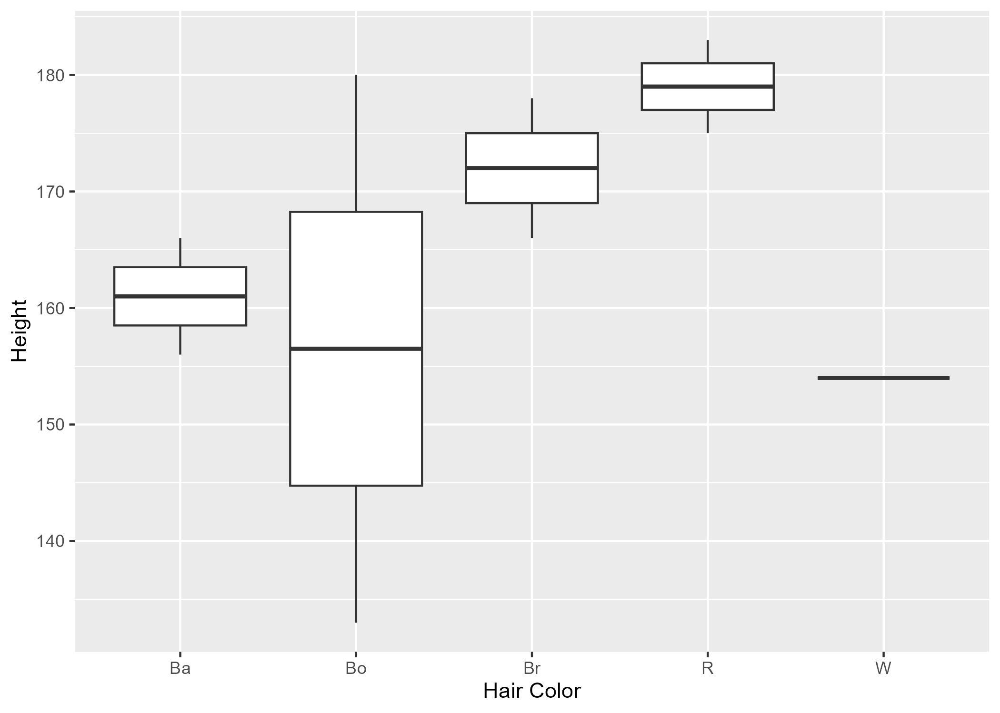
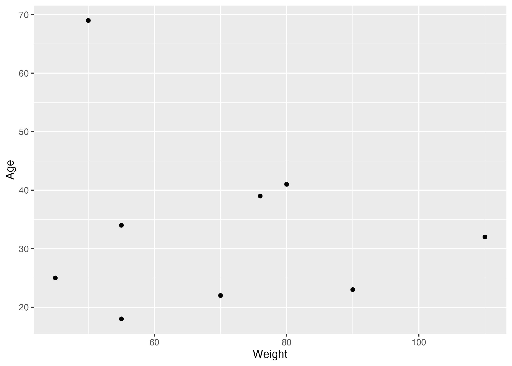

| skim_type | skim_variable | n_missing | complete_rate | character.min | character.max | character.empty | character.n_unique | character.whitespace | factor.ordered | factor.n_unique | factor.top_counts | numeric.mean | numeric.sd | numeric.p0 | numeric.p25 | numeric.p50 | numeric.p75 | numeric.p100 | numeric.hist |
|---|---|---|---|---|---|---|---|---|---|---|---|---|---|---|---|---|---|---|---|
| character | Hair Color | 0 | 1 | 1 | 2 | 0 | 5 | 0 | NA | NA | NA | NA | NA | NA | NA | NA | NA | NA | NA |
| factor | Gender | 0 | 1 | NA | NA | NA | NA | NA | FALSE | 3 | M: 4, F: 3, O: 2 | NA | NA | NA | NA | NA | NA | NA | NA |
| numeric | Height | 0 | 1 | NA | NA | NA | NA | NA | NA | NA | NA | 165.66667 | 15.97655 | 133 | 156 | 166 | 178 | 183 | ▂▁▃▃▇ |
| numeric | Weight | 0 | 1 | NA | NA | NA | NA | NA | NA | NA | NA | 70.11111 | 21.24526 | 45 | 55 | 70 | 80 | 110 | ▇▂▃▂▂ |
| numeric | Age | 0 | 1 | NA | NA | NA | NA | NA | NA | NA | NA | 33.66667 | 15.42725 | 18 | 23 | 32 | 39 | 69 | ▇▃▃▁▂ |
Data Analysis Project
What effect does Age/Hair Color have?
Malika Dhakhwa contributed to this exercise
1 Summary/Abstract
This project was performed in three separate parts in collaboration with Malika Dhakhwa. Part 1 involved creating the data set. For this project, the data set that showed demographic information of people, such as height, weight, gender, age, and hair color. Part 2 was performed by Malika, which involved processing and cleaning the data set. The last part involves analyzing the data using linear models.
2 Introduction
2.1 General Background Information
The analysis was conducted for educational purposes. A theorized, messy data set is provided, and my partner and I collaborated to process, clean, and analyze the data set using R and Rstudio.
2.2 Description of data and data source
The data provided was in a .xlsx file, which held the demographic information on 14 different individual. The demographic information included: height, weight, gender, age, and hair color.
2.3 Questions/Hypotheses to be addressed
Was the data able to be analyzed after the process of cleaning? What can be determined when the linear model was applied to this dataset?
3 Methods
Part 1: The data set provided for the course is provided in a template from Andreas Handel (https://github.com/andreashandel/online-portfolio-template). The data was manually changed to provide two new categories to the data set. The two new categories added were: income and education level. The data set can be found in the folder /mutsanyamuranga-MADA-portfolio/starter-analysis-excercise/data/raw-data/exampledata2.xlsx in the github.
Part 2: The data set was processed and cleaned by Malika Dhakhwa. The data was loaded and read with the package ‘readx1’. The codebook was looked at with the same package. The following used the package ‘skimr’ to assist in visualizing summary reading.
When cleaning the data, the package ‘dplyer’ was used to mutate the incorrect data “sixty” into a numeric form in the height category. It was also used to remove the data from the person providing “6,” as the data provided for it had uncertainty. The person providing the weight value “7000” was also removed. The gender category was changed from character to categorical.
Malika then saved the data to /mutsanyamuranga-MADA-portfolio/starter-analysis-excercise/data/processed-data/processeddata2.rds in the github.
Part 3: A statiscal analysis is performed with the lm() function. The statistical analysis was performed with a linear model fit between height as the outcome and the two new variables “Age” and “Hair Color.” The result of the linear model fit is placed on a table with the tidyverse package. The table is then saved as “resulttable3.rds” in the github.
3.1 Data aquisition
The data was initially provided by Andreas Handel for the Spring 2024 MADA course. The data is then manipulated by Mutsa Nyamuranga in part 1.
3.2 Data import and cleaning
3.2.1 Setup
Load needed packages. make sure they are installed.
library(readxl) #for loading Excel files library(dplyr) #for data processing/cleaning library(tidyr) #for data processing/cleaning library(skimr) #for nice visualization of data library(here) #to set paths
3.2.2 Data loading
“# path to data”# note the use of the here() package and not absolute paths data_location <- here::here(“starter-analysis-exercise”,“data”,“raw-data”,“exampledata2.xlsx”) rawdata <- readxl::read_excel(data_location)
3.2.3 Check data
First we can look at the codebook
codebook <- readxl::read_excel(data_location, sheet =“Codebook”) print(codebook)
3.2.4 Cleaning
Change data to numeric values
d1 <- rawdata %>% dplyr::filter( Height != “sixty” ) %>% dplyr::mutate(Height = as.numeric(Height)) skimr::skim(d1) hist(d1$Height)
Since we unfortunately don’t know, we might need to remove this person with height of 6, which we’ll do here
d2 <- d1 %>% dplyr::mutate( Height = replace(Height, Height==“6”,round(6*30.48,0)) ) skimr::skim(d2)
To be able to analyze the data, we’ll remove those individuals with weight of 7000
d3 <- d2 %>% dplyr::filter(Weight != 7000) %>% tidyr::drop_na() skimr::skim(d3)
Now checking the Gender variable.
d3\(Gender <- as.factor(d3\)Gender)
skimr::skim(d3)
Removing that individual with that NA entry
d4 <- d3 %>% dplyr::filter( !(Gender %in% c(“NA”,“N”)) ) %>% droplevels() skimr::skim(d4)
4 Results
4.1 Exploratory/Descriptive analysis
Below are the results of the data analysis of our data set.
Table 1 shows a summary of the data.
Figure 1 shows a boxplot figure produced by one of the R scripts.

Figure 2 shows a scatterplot figure produced by one of the R scripts.

Example Table 2 shows a summary of a linear model fit
| term | estimate | std.error | statistic | p.value |
|---|---|---|---|---|
| (Intercept) | 102.065611 | 20.8877422 | 4.8863879 | 0.0163914 |
Hair ColorBo |
-13.805430 | 10.6802921 | -1.2926079 | 0.2867000 |
Hair ColorBr |
-3.475113 | 11.2987748 | -0.3075655 | 0.7785289 |
Hair ColorR |
35.576923 | 11.7752051 | 3.0213421 | 0.0566987 |
Hair ColorW |
-90.748869 | 30.5334161 | -2.9721165 | 0.0589680 |
| Age | 2.067873 | 0.6876215 | 3.0072841 | 0.0573354 |
Here is the code used to render this linear model analysis
#load needed packages. make sure they are installed. library(ggplot2) #for plotting library(broom) #for cleaning up output from lm() library(here) #for data loading/saving
#path to data
#note the use of the here() package and not absolute paths’
data_location <- here::here(“starter-analysis-exercise”,“data”,“processed-data”,“processeddata2.rds”)
#load data.
mydata <- readRDS(data_location)
# fit linear model using height as outcome, Hair Color and Age as predictor
lmfit3 <- lm(Height ~ Hair Color + Age, mydata)
# place results from fit into a data frame with the tidy function
lmtable3 <- broom::tidy(lmfit3)
#look at fit results’ print(lmtable3)
# save fit results table
table_file3 = here(“starter-analysis-exercise”,“results”, “tables-files”, “resulttable3.rds”) saveRDS(lmtable3, file = table_file3)
4.2 Full analysis
It looks as though there is no apparent association between Age and weight. In Figure 2, there appears to be no pattern in the distribution of data points as weight increases. The individuals that showed the greatest variation in height in accordance to Figure 1 were those with brown hair. In the other levels, there is little variation in height.
In Table 2, the intercept provided an extremely high p=value, thus showing that the age and hair color variables affecting the height can not be proven or concluded.
4.3 Conclusions
The project was a great way to improve in data analysis methods by establishing familiarity with software such as Github, R and Rstudio to clean analyze, and produce figures/tables for data.
5 References
Leek, J. T., & Peng, R. D. (2015). Statistics. What is the question?Science (New York, N.Y.), 347(6228), 1314–1315. https://doi.org/10.1126/science.aaa6146
McKay, B., Ebell, M., Billings, W. Z., Dale, A. P., Shen, Y., &Handel, A. (2020). Associations Between Relative Viral Load at Diagnosisand Influenza A Symptoms and Recovery. Open Forum InfectiousDiseases, 7(11), ofaa494. https://doi.org/10.1093/ofid/ofaa494
My repository: https://github.com/MutsaN1/mutsanyamuranga-MADA-portfolio.git